Dos años, cuatro meses y un montón de recuerdos que contigo se
sienten todavía más bonitos.
Te hice esto a ti, Yazmin, para que cada página se sienta como un
pedacito de nosotros.
Toca el botón para pasar de la portada al libro digital.
♪ Sonando:My One And Only Love
Edición especial
Para Yazmin, de tu Valentín
No sabía lo enamorado que estaba hasta que empecé a querer
guardar cada detalle de nosotros, como si todo mereciera
quedarse para siempre.
Esta mini revista es solo una forma bonita de decirte que
amo nuestra historia y que amo seguir escribiéndola contigo.
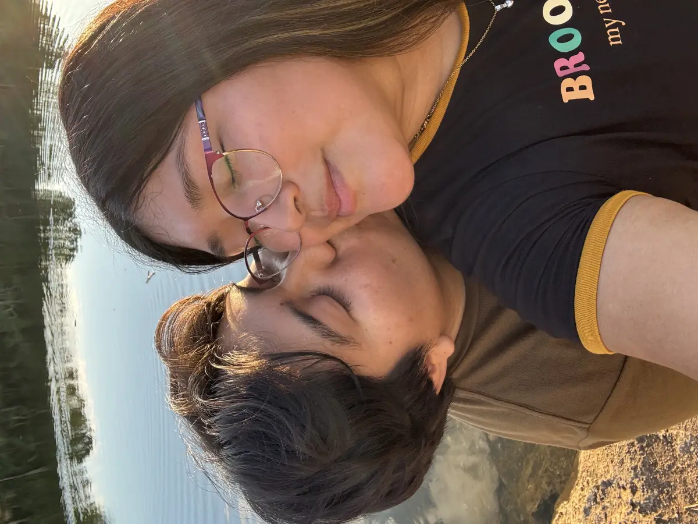
Mi lugar favorito
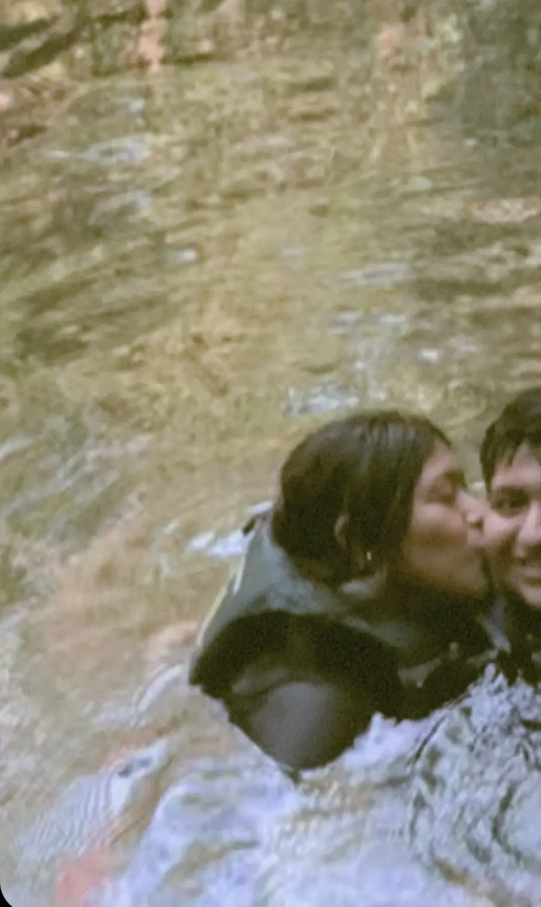
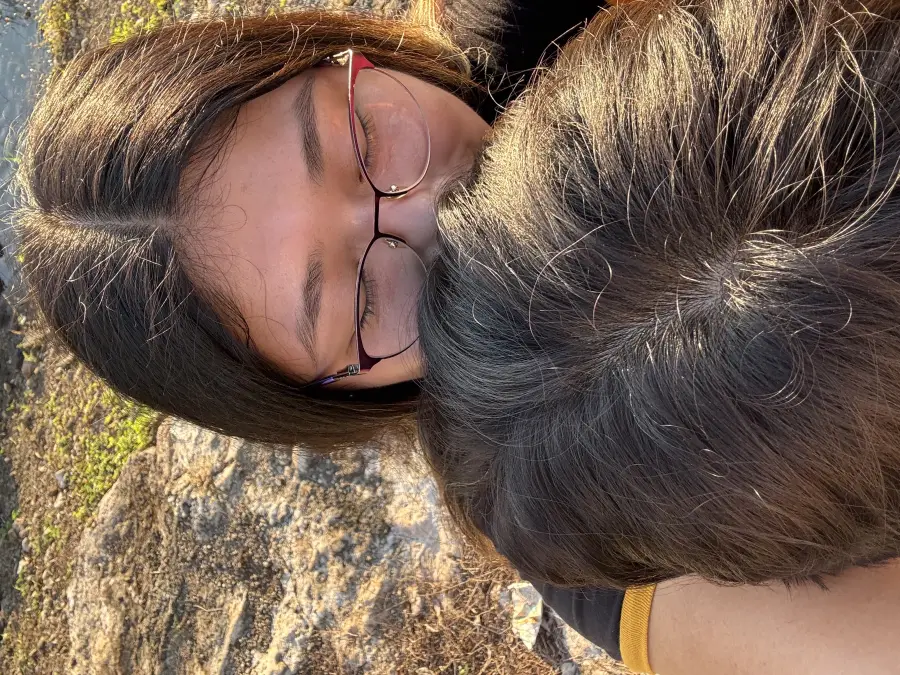
Razones por las queTE AMO
Tus ojitos siempre me dan paz.
Tus abrazos se sienten como hogar.
Me haces feliz hasta en los días simples.
Amo la manera en que sonríes conmigo.
Contigo aprendí lo bonito que es amar de verdad.
Eres mi lugar favorito en cualquier momento.
Tú y yo
Lo que siento por ti
Amarte se siente como volver a casa.
Eres mi foto favorita, mi pensamiento favorito y la
coincidencia más bonita que me ha pasado.
Google
¿Qué es la felicidad?
Fácil: nuestras fotos juntos, tus cachetitos cuando
sonríes, los besitos, las noches en la plaza y cada
momento que termina siendo recuerdo bonito.
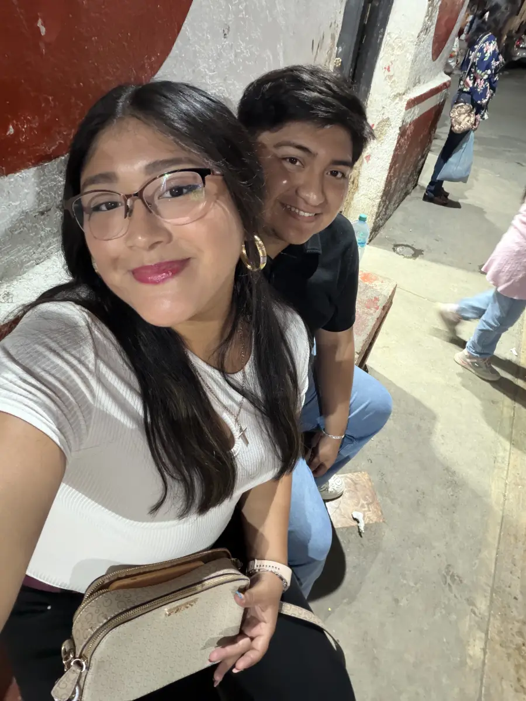
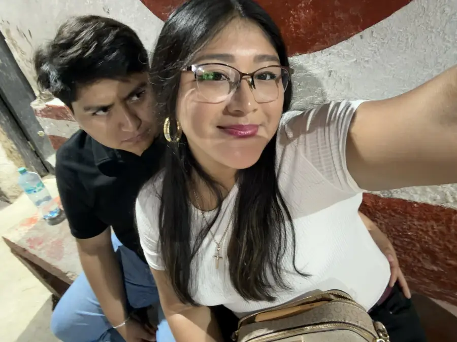
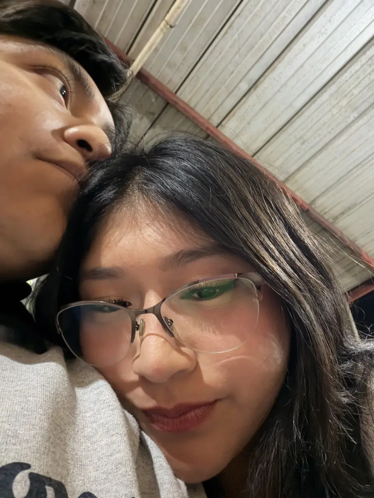
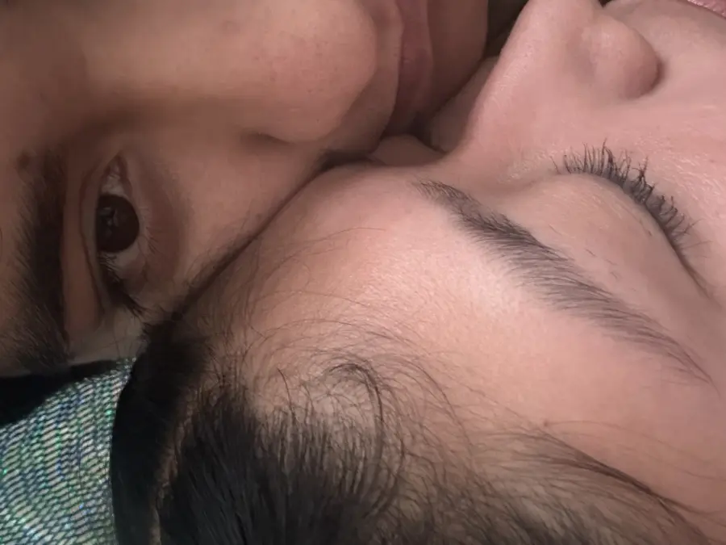
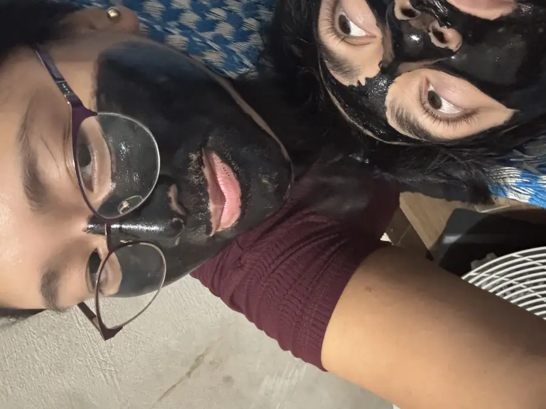
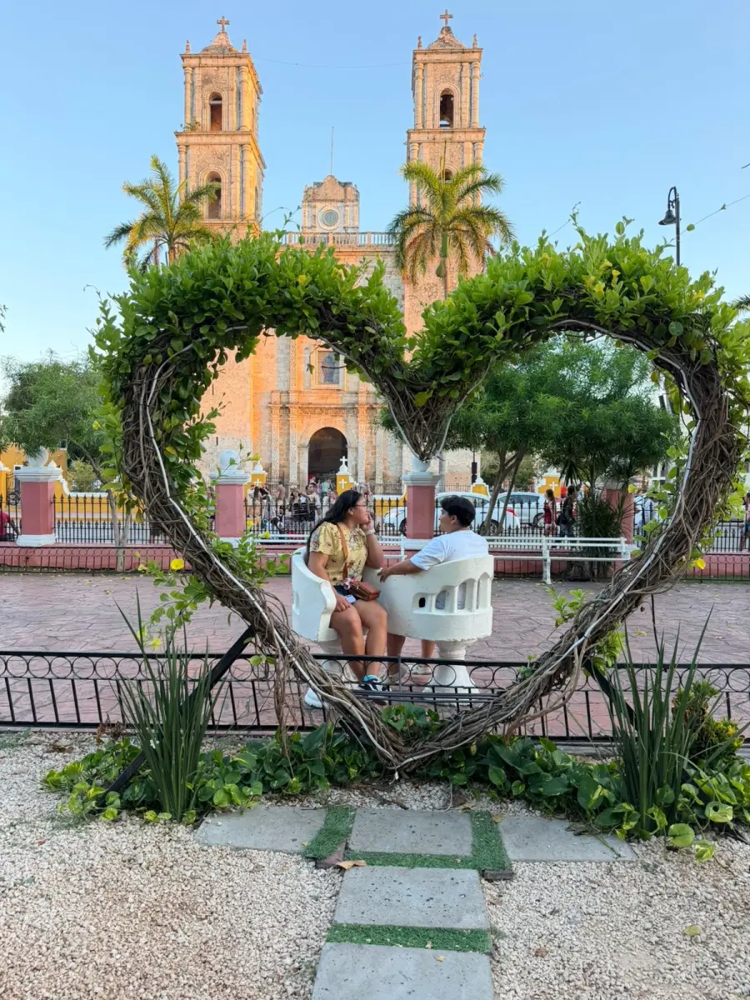
Nuestros momentos
Pequeñas escenas que no quiero olvidar
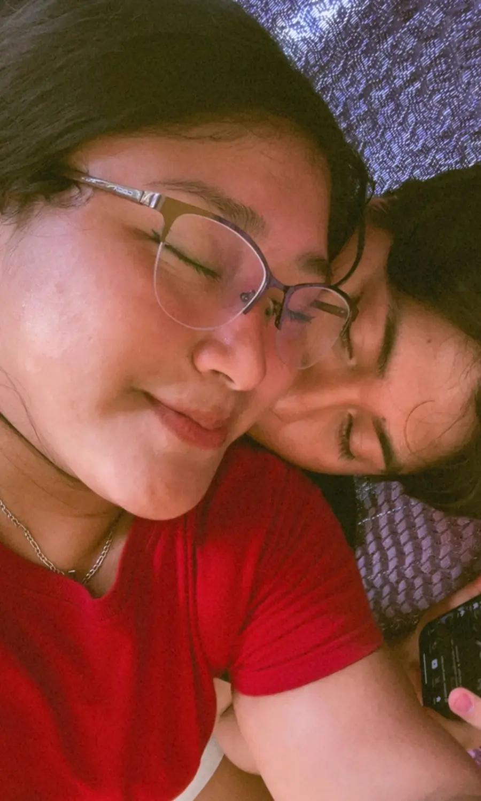
Hasta las fotos borrosas me encantan si sales conmigo.Mis ratitos favoritos siempre te encuentran.
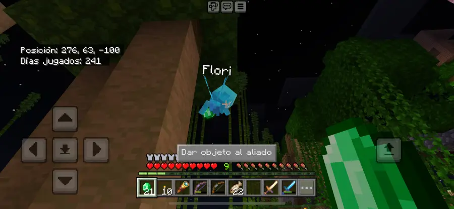
Amo hasta nuestras tonterías y aventuras.
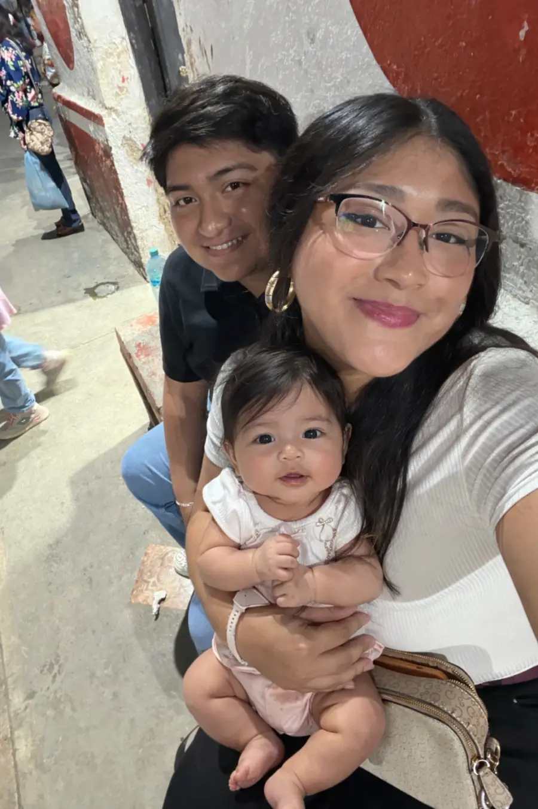
Hasta cuidarnos juntos se siente divertido.Y hasta los momentos más sencillos se sienten especiales contigo.Y mis lugares favoritos siempre terminan siendo donde estás tú.
Gracias por existir en mi vida, Yazmin. Si pudiera elegir de
nuevo, te volvería a elegir a ti.